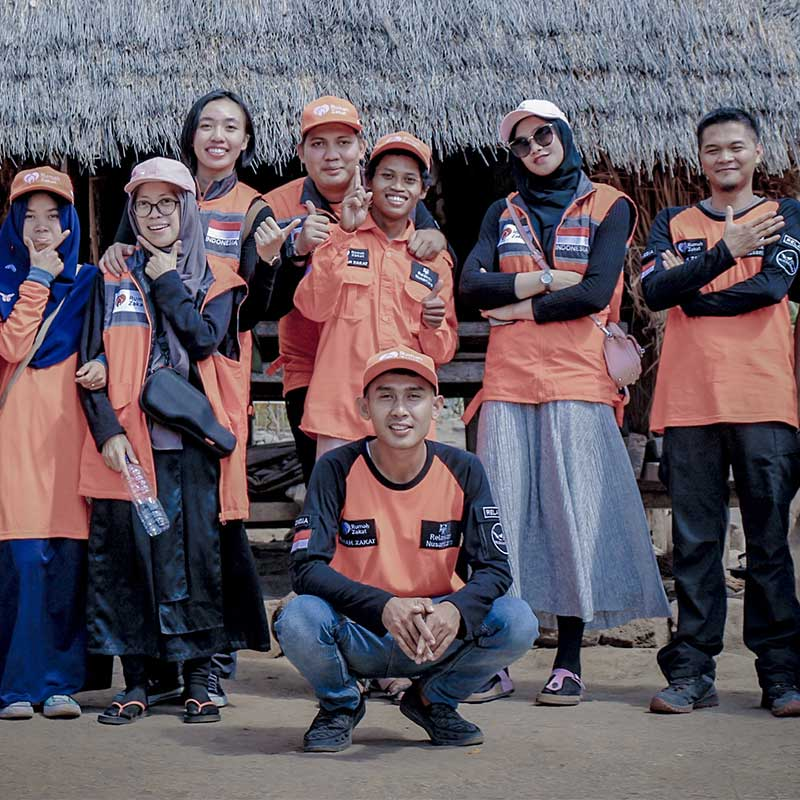
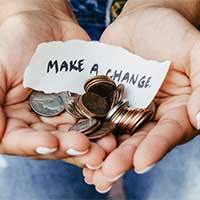
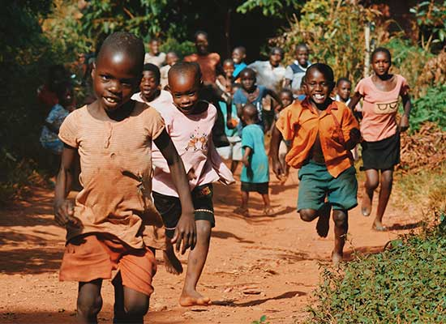
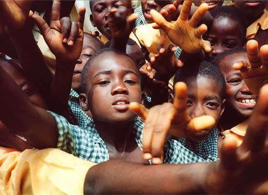
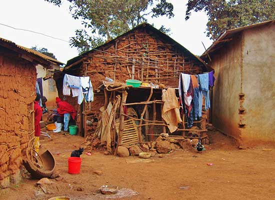

True Era Sustainable Response Uganda (TESR-U) is a nationally registered, community-centred non-profit organisation dedicated to promoting sustainable development, environmental stewardship, resilience building and social transformation among vulnerable populations across Uganda.
A resilient Uganda where empowered communities lead sustainable development, protect the environment, thrive through meaningful partnerships, and restore hope to the hopeless.
Our VisionTo empower communities across Uganda by promoting sustainable practices, fostering inclusive participation, and building strategic partnerships that drive social, economic, and environmental transformation.
Our MissionTESR-U's profile lists programme areas in Kiryandongo, Lamwo, Kitgum, Agago, Omoro and Gulu, and describes work with both host and refugee communities. Planned expansion areas are presented separately from current programme areas.
Learn More Contact UsTESR-U's work focuses on sustainable development, environmental stewardship, economic opportunity, protection, peacebuilding and humanitarian response.
TESR-U promotes sustainable environmental management and climate-resilient practices that help communities adapt to climate change while protecting natural resources.
Climate-smart agriculture; tree planting and reforestation; sustainable land management; natural resource conservation; renewable energy; environmental awareness and advocacy.

TESR-U supports vulnerable households to improve incomes, build assets and achieve economic self-reliance.
Agricultural value-chain development; Village Savings and Loan Associations (VSLAs); entrepreneurship; financial literacy; market systems development; youth employment and skills development.

TESR-U invests in programmes that equip young people with skills, opportunities and confidence to become drivers of positive change.
Vocational skills training; leadership development; innovation and entrepreneurship; employability enhancement; digital literacy; youth participation in governance and development.

TESR-U works to ensure that vulnerable individuals and groups live free from violence, exploitation, discrimination and abuse.
Child protection; gender-based violence prevention and response; community-based protection systems; referral and case management; rights awareness and advocacy; social inclusion.
TESR-U supports communities affected by conflict, displacement and social tensions to build peaceful, inclusive and resilient societies.
Peacebuilding and conflict resolution; community dialogue platforms; social cohesion; refugee-host community integration; resilience strengthening; local governance engagement.
TESR-U delivers timely and accountable humanitarian assistance while supporting long-term recovery and resilience building.
Emergency preparedness; disaster risk reduction; food security support; emergency livelihoods recovery; community-based response mechanisms; protection in emergencies.
TESR-U's organisational profile lists current programme areas in Kiryandongo, Lamwo, Kitgum, Agago, Omoro and Gulu.
Kiryandongo District, Lamwo District, Kitgum District, Agago District, Omoro District and Gulu.
West Nile sub-region, Mid-Western Uganda and other vulnerable and underserved regions are identified as planned growth areas, not confirmed current locations.
Location names and current activity status should be confirmed before publication of a geographic map or district count.
TESR-U's profile identifies women and girls, children and adolescents, youth and young entrepreneurs, refugees and host communities, smallholder farmers, persons with disabilities, elderly persons, vulnerable households, community-based organisations and local government institutions among its beneficiary and stakeholder groups.
TESR-U believes transformational change is achieved through strategic partnerships, collective action and shared responsibility. Connect with the organisation to discuss collaboration.
Start a ConversationFind out more about the communities TESR-U works with, its partnerships, future direction and organisational updates.
Explore the locations and community groups identified in the organisation's profile.
Explore our reachLearn about the institutions and organisations TESR-U seeks to collaborate with.
Explore partnershipsContact TESR-U to discuss volunteering, skills-sharing or possible collaboration.
Find ways to connectRead the future priorities outlined in the organisational profile.
Read the prioritiesVisit the space for future announcements and approved field stories.
View news and updates